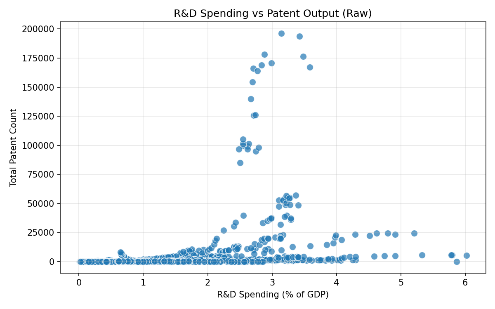
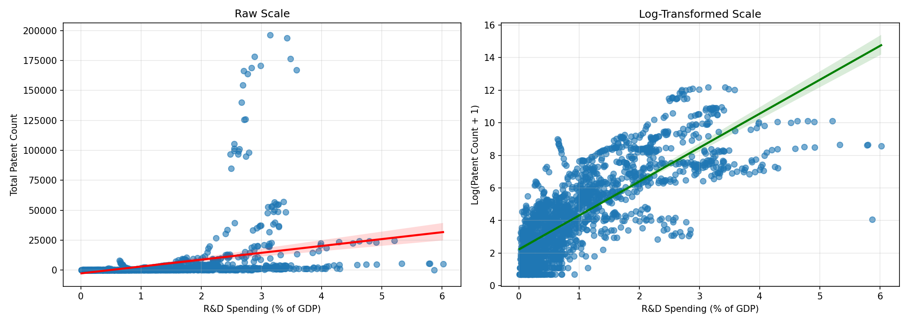
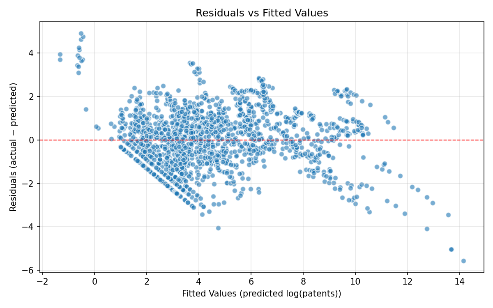
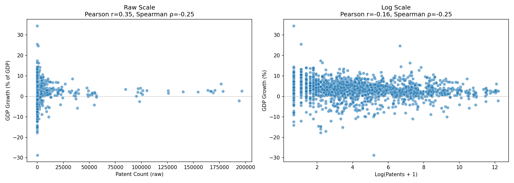
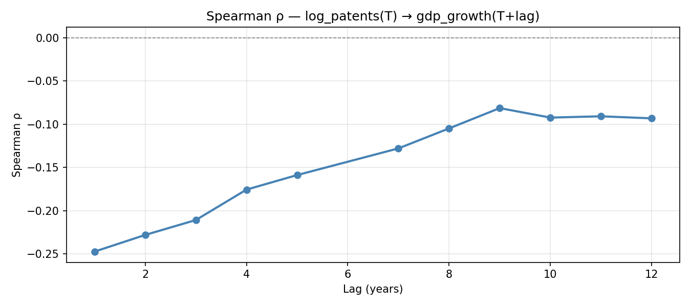

Primary Questions
1. Does national R&D spending correlate with patent output?
Before any treatment is made, the relationship’s shape can be seen in an initial scatter plot of raw R&D spending (% of GDP) against the total number of patents.

The Pearson correlation on raw values yields a moderate positive association:
\[r = 0.355, \quad p < 0.001\]
However, this understates the true strength of the relationship. The Spearman rank correlation — robust to outliers and distributional skew — is substantially higher:
\[\rho = 0.808, \quad p < 0.001\]
The large gap between the two statistics (Δ = 0.453) indicates that the relationship is monotonic but non-linear: as R&D spending increases, patent output increases at an accelerating rather than a constant rate. Patent counts are highly right-skewed, with most countries producing relatively few patents while a handful of high-investment nations produce orders of magnitude more.
Applying a log-transformation to patent counts (\(\log(\text{patents} + 1)\)) substantially improves the linear fit. The regression plots below compare the raw and log-transformed scales side by side.

\[r_{\log} = 0.791, \quad p < 0.001\]
A given increase in R&D spending (% of GDP) is associated with a multiplicative increase in patent output rather than an additive one.
OLS regression with log(patents) as the outcome and both rd_gdp and log(population) as predictors yielded the following coefficient estimates:
| Predictor | Coefficient |
|---|---|
| Intercept | −7.76 |
| R&D spending (% GDP) | +2.00 |
| log(Population) | +0.61 |
Holding population constant, each additional percentage point of GDP directed toward R&D is associated with a doubling of expected patent output on the log scale. The residual plot below confirms there is no systematic bias in the fitted values.

Summary: R&D spending is a strong positive predictor of patent output. The relationship is monotonic and non-linear — consistent with an exponential scaling pattern — and is highly statistically significant across all tested specifications.
2. Does patent output correlate with GDP growth?
The raw-scale and log-scale scatter plots are shown side by side below.

The near-zero Pearson correlation (r=−0.055) confirms the absence of a linear relationship, while the Spearman correlation (ρ=−0.248,p<0.001) reveals a persistent, non-linear downward trend.By utilizing ranks, the Spearman coefficient captures a directional association that the Pearson metric fails to detect due to the data’s non-linear structure.
After log-transforming patent counts, both measures align:
\[r_{\log} = -0.162, \quad \rho_{\log} = -0.248, \quad p < 0.001 \text{ (both)}\]
Countries with higher patent output do not systematically experience higher GDP growth. Two hypotheses were considered and tested in the lag analysis that follows.
3. Is there a lag effect?
Given that the economic payoff from research and innovation would realistically take years to materialise, a multi-year lag analysis was conducted for both directions of the relationship.
R&D spending → Patent output (lags 0–5 years):
| Lag (years) | Spearman ρ | p-value | n |
|---|---|---|---|
| 0 | 0.808 | < 0.001 | 1,801 |
| 1 | 0.806 | < 0.001 | 1,672 |
| 2 | 0.806 | < 0.001 | 1,556 |
| 3 | 0.806 | < 0.001 | 1,449 |
| 4 | 0.805 | < 0.001 | 1,347 |
| 5 | 0.804 | < 0.001 | 1,250 |
The R&D → patent association is virtually time-invariant across all lag lengths, suggesting that patent output responds to R&D investment without a detectable multi-year delay at annual resolution.
Patent output → GDP growth (lags 1–12 years):
The Spearman correlation profile below shows how the patent → GDP growth association evolves across lag lengths.

| Lag (years) | Spearman ρ | p-value |
|---|---|---|
| 1 | −0.247 | < 0.001 |
| 2 | −0.228 | < 0.001 |
| 3 | −0.211 | < 0.001 |
| 4 | −0.176 | < 0.001 |
| 5 | −0.159 | < 0.001 |
| 7 | −0.128 | < 0.001 |
| 8 | −0.105 | 0.001 |
| 9 | −0.081 | 0.016 |
| 10 | −0.092 | 0.009 |
| 11 | −0.091 | 0.015 |
| 12 | −0.093 | 0.018 |
Testing Hypothesis 1 — Reverse causality: Lagging GDP growth by one year and correlating with current patent output yielded ρ = −0.259 (p < 0.001) — also negative. This rules out the possibility that GDP growth is itself driving patent activity.
Testing Hypothesis 2 — Income-group averaging: Countries were split into “High R&D” (rd_gdp ≥ 1.0%) and “Low R&D” groups. Both sub-groups showed negative correlations (ρ = −0.130 and −0.163 respectively), ruling out the averaging-artefact explanation.
Summary: The most plausible interpretation is a short-term resource cost: patenting is expensive and R&D-intensive, generating a drag on measured GDP growth in the near term. Any long-term growth payoff, if it exists, appears too diffuse or conditional to emerge in a simple bivariate correlation at annual resolution.